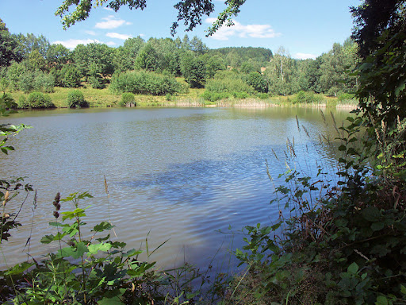

Cíle projektu
- Zachytávání CO₂ ze spalin
- Lokální syntéza zeleného NH₃
- Metrologie a měření účinnosti
- Napojení na energetické sítě
Lokální přínosy
- Nízké emise v regionu
- NH₃ pro průmysl a teplárny
- Stabilní dodávky energie
- Transformace průmyslové zóny
Technologie
- DAC / zachytávání CO₂
- Syntéza NH₃
- Bezpečnostní infrastruktura
- Řízení a metrologie
Stav: probíhá technická specifikace.
RD a obce – lokální zelené uzly energie

Cíle projektu
- Model RD + model obce
- Stabilní příjem výkonu
- Mini-syntetický okruh NH₃
- Zajištění bezpečnosti
Přínosy
- Stabilní energie mimo počasí
- Ukládání energie v NH₃
- Snížení zátěže sítě
- Soběstačnost pro obce
Technologie
- Řízení příjmu výkonu
- Mini-syntéza NH₃
- Bezpečnostní pásma
- Integrace s topnými systémy
Stav: probíhá návrh dvou modelových lokalit.
Doupov – geotermální energetický hub

Cíle projektu
- Geologické mapování
- Návrh pilotního vrtu
- Tepelný model lokality
- Kombinace tepla a syntézy
Přínosy
- Stálý zdroj tepla
- Dodávky tepla obcím
- Podpora regionální obnovy
- Hybridní provoz s OS energií
Technologie
- Hlubinné vrty
- Tepelné čerpané okruhy
- Integrace se syntézou
- Řízení tepelné bilance
Stav: probíhá geologická a tepelná analýza.